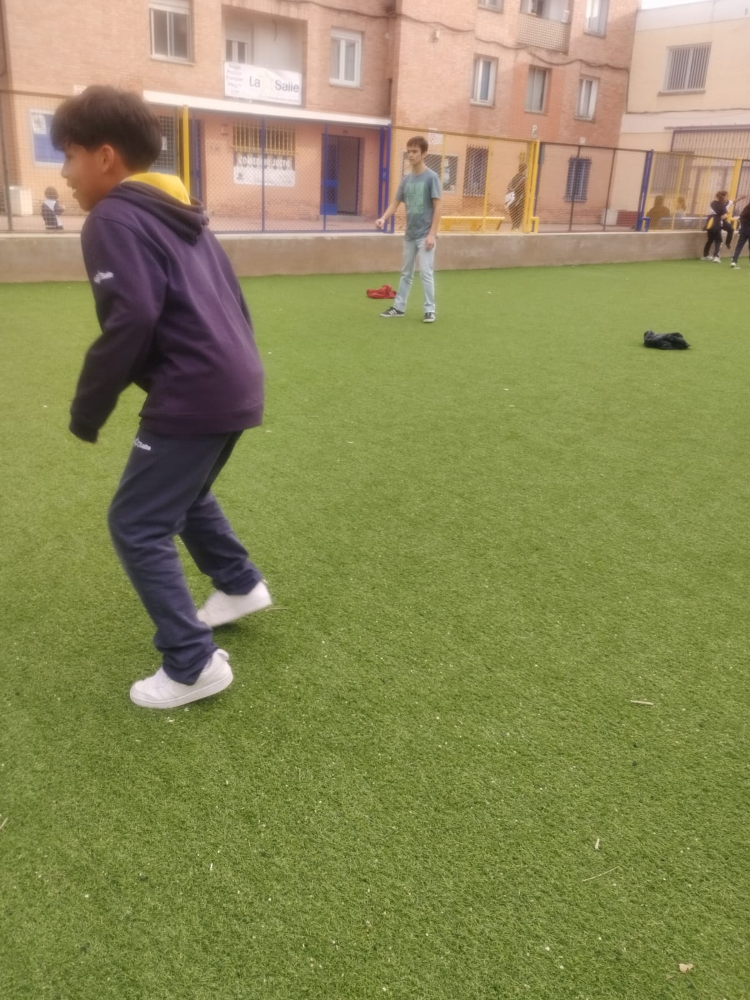

Sobre el proyecto
El Espacio Ni2 es una iniciativa de la Obra Social de La Salle que se centra en el acompañamiento y apoyo escolar para niños y niñas en situación de vulnerabilidad. A través de este proyecto, buscamos crear un entorno seguro de aprendizaje y crecimiento para los más pequeños, fomentando la inclusión y la igualdad de oportunidades.